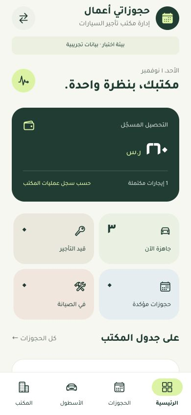
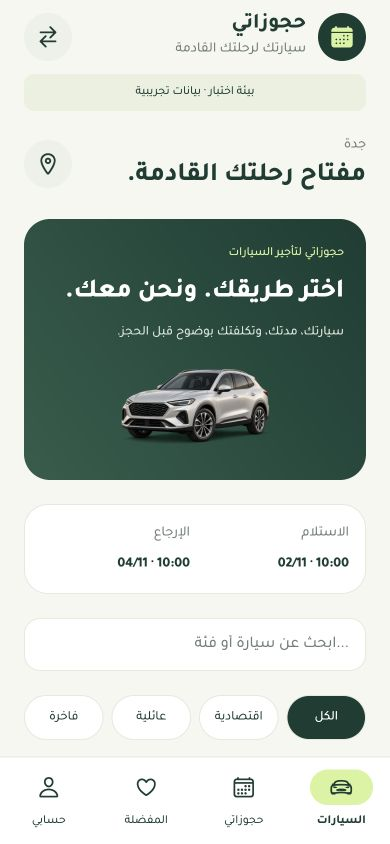

للمستأجر
حجوزاتي
السيارة والفترة والتكلفة، أمامك قبل الحجز.
- ابحث بين السيارات والفئات والمواصفات.
- حدّد الاستلام والإرجاع واعرف الإجمالي والضمان.
- احجز وتابع الحالة من حسابك.
تطبيقان. رحلة واحدة متصلة.
جرّب الحجز من هاتف المستأجر، ثم تابع الرحلة من مكتب التأجير. أسطولك وحجوزاتك ومحاضر السيارة في تجربة عربية واحدة.
تنزيل مباشر بصيغة APK، دون الحاجة إلى أي حساب.


اختيار أوضح. إدارة أسهل.ابدأ من الطرف الذي يناسبك
للمستأجر
السيارة والفترة والتكلفة، أمامك قبل الحجز.
لمكتب التأجير
صورة واضحة لأسطولك، وكل خطوة في الإيجار.
تجربة سريعة وواضحة
افتح هذه الصفحة من هاتف Android. نزّل التطبيق وثبّت ملف APK. يمكنك تثبيت التطبيقين على الهاتف نفسه.
هل ثبّتَ نسخة سابقة؟ احذفها أولًا ثم ثبّت النسخة 1.1.0، لأنها موقّعة بمفتاح جديد ولن تُثبَّت فوق القديمة.
أنشئ حسابك من التطبيق برقم جوالك السعودي وكلمة مرور، أو استخدم بيانات الحساب المرسلة إليك بشكل خاص. التطبيقان متصلان ببيئة الاختبار نفسها.
احجز سيارة من حساب المستأجر، ثم اسحب شاشة المكتب إلى أسفل لتحديث الحجوزات. جرّب محضر التسليم والتحصيل الجزئي ثم الاستلام.
السيارات والأسعار وعمليات التحصيل هنا للتجربة فقط. لا تُجرى مدفوعات إلكترونية أو تُصدر عقود رسمية. استخدم بيانات غير حقيقية. قاعدة بيانات الاختبار مؤقتة وتنتهي في 1 ديسمبر 2026. قد تستغرق أول استجابة بضع ثوانٍ بعد فترة خمول.